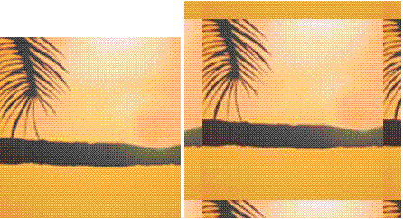

Manipulating ColdFusion images
|

You can perform a few common manipulation operations on
ColdFusion images. For more information on manipulating ColdFusion
images, see the CFML Reference.
Adding borders to imagesTo create a simple border, use the cfimage tag.
The following example creates a ColdFusion image with a 5-pixel
blue border:
<cfimage source="../cfdocs/images/artgallery/jeff01.jpg" action="border" thickness="5"
color="blue" destination="testMyImage.jpg" overwrite="yes">
<img src="testMyImage.jpg">
The border is added to the outside edge of the source image.
This increases the area of the image.
To create complex borders, use the ImageAddBorder function.
The following example shows how to nest borders:
<!--- Create a ColdFusion image from a JPEG file. --->
<cfset myImage=ImageNew("../cfdocs/images/artgallery/jeff01.jpg")>
<!--- Add a 5-pixel blue border around the outside edge of the image. --->
<cfset ImageAddBorder(myImage,5,"blue")>
<!--- Add a 10-pixel magenta border around the blue border. --->
<cfset ImageAddBorder(myImage,10,"magenta")>
<!--- Add a 5-pixel green border around the magenta border. --->
<cfset ImageAddBorder(myImage,20,"green")>
<!--- Write the ColdFusion image to a file. --->
<cfset ImageWrite(myImage,"testMyImage.jpg")>
<img src="testMyImage.jpg"/>
Also, with the ImageAddBorder function, you
can add a border that is an image effect. For example, you can use
the wrap parameter to create a tiled border from
the source image. The wrap parameter creates a
tiled border by adding the specified number of pixels to each side
of the image, as though the image were tiled.
In the following example, 20 pixels from the outside edge of
the source image are tiled to create the border:
<cfset myImage=ImageNew("../cfdocs/images/artgallery/jeff03.jpg")>
<cfset ImageAddBorder(myImage,20,"","wrap")>
<cfset ImageWrite(myImage,"testMyImage.jpg")>
<img src="testMyImage.jpg"/>
 For examples of other border types, see the ImageAddBorder function in the CFML Reference.
Creating text imagesYou can create two types of text images:
A CAPTCHA image, in which ColdFusion randomly distorts
the text
A text image, in which you control the text attributes
Creating a CAPTCHA imageYou use the captcha action of the cfimage tag
to create a distorted text image that is human-readable but not
machine readable. When you create a CAPTCHA image, you specify the
text that is displayed in the CAPTCHA image; ColdFusion randomly
distorts the text. You can specify the height and width of the text
area, which affects the spacing between letters, the font size,
the fonts to use for the CAPTCHA text, and the level of difficulty,
which affects readability. Do not use spaces in the text string
specified for the text attribute: users cannot detect
the spaces as part of the CAPTCHA image.
The following example shows how to write a CAPTCHA image directly
to the browser.
<!--- This example shows how to create a CAPTCHA image with the text "rEadMe" and write the
image directly to the browser. --->
<cfimage action="captcha" fontSize="25" width="162" height="75" text="rEadMe"
fonts="Verdana,Arial,Courier New,Courier">
Note: For the CAPTCHA image to display, the width value
must be greater than: fontSize times the number
of characters specified in text times 1.08. In
this example, the minimum width is 162.
ColdFusion 9 supports CAPTCHA images in PNG format only.
Note: If you specify the destination attribute
to write CAPTCHA images to files, use unique names for the CAPTCHA
image files so that when multiple users access the CAPTCHA images,
the files are not overwritten.
The following example shows how to create CAPTCHA images with
a high level of text distortion.
<!--- Use the GetTickCount function to generate unique names for the CAPTCHA files. --->
<cfset tc = GetTickCount()>
<!--- Set the difficulty to "high" for a higher level of text distortion. --->
<cfimage action="captcha" fontSize="15" width="180" height="50" text="rEadMe"
destination="readme#tc#.png" difficulty="high">
For a detailed example, see Using CAPTCHA to verify membership.
The following image shows three CAPTCHA images with low, medium,
and high levels of difficulty, respectively:
Using the ImageDrawText functionTo create a text image by using the ImageDrawText function,
specify the text string and the x and y coordinates for the location
of the beginning of the text string. You can draw the text on an
existing image or on a blank image, as the following examples show:
<!--- This example shows how to draw a text string on a blank image. --->
<cfset myImage=ImageNew("",200,100)>
<cfset ImageDrawText(myImage, "Congratulations!",10,50)>
<cfimage source="#myImage#" action="write" destination="myImage.png" overwrite="yes">
<img src="myImage.png">
<!--- This example shows how to draw a text string on an existing image.
--->
<cfset myImage2=ImageNew("../cfdocs/images/artgallery/jeff01.jpg")>
<cfset ImageDrawText(myImage2,"Congratulations!",10,50)>
<cfimage source="#myImage2#" action="write" destination="myImage2.png" overwrite="yes">
<img src="myImage2.png">
In the previous examples, the text is displayed in the default
system font and font size. To control the appearance of the text,
you specify a collection of text attributes, as the following example
shows:
<cfset attr = StructNew()>
<cfset attr.style="bolditalic">
<cfset attr.size=20>
<cfset attr.font="verdana">
<cfset attr.underline="yes">
To apply the text attributes to the text string, include the
attribute collection name in the ImageDrawText definition.
In the following examples, the "attr" text attribute
collection applies the text string "Congratulations!":
...
<cfset ImageDrawText(myImage,"Congratulations!",10,50,attr)>
To change the color of the text, use the ImageSetDrawingColor function. This
function controls the color of all subsequent drawing objects on
an image. In the following example, two lines of text, “Congratulations!”
and “Gabriella”, inherit the color magenta.
<!--- This example shows how to draw a text string on a blank image. --->
<cfset myImage=ImageNew("../cfdocs/images/artgallery/jeff01.jpg")>
<cfset ImageSetDrawingColor(myImage,"magenta")>
<cfset attr = StructNew()>
<cfset attr.style="bolditalic">
<cfset attr.size=20>
<cfset attr.font="verdana">
<cfset attr.underline="yes">
<cfset ImageDrawText(myImage,"Congratulations!",10,50,attr)>
<cfset ImageDrawText(myImage,"Gabriella",50,125,attr)>
<cfimage source="#myImage#" action="write" destination="myImage.jpg" overwrite="yes">
<img src="myImage.jpg"/>
For a list of valid named colors, see the cfimage tag in the CFML Reference.
Drawing lines and shapesColdFusion provides several functions for drawing lines
and shapes. For shapes, the first two values represent the x and
y coordinates, respectively, of the upper-left corner of the shape.
For simple ovals and rectangles, the two numbers following the coordinates
represent the width and height of the shape in pixels. For a line,
the values represent the x and y coordinates of the start point
and end point of the line, respectively. To create filled shapes,
set the filled attribute to true. The following
example shows how to create an image with several drawing objects:
<!--- Create an image that is 200-pixels square. --->
<cfset myImage=ImageNew("",200,200)>
<!--- Draw a circle that is 100 pixels in diameter. --->
<cfset ImageDrawOval(myImage,40,20,100,100)>
<!--- Draw a filled rectangle that is 40 pixels wide and 20 pixels high.
--->
<cfset ImageDrawRect(myImage,70,50,40,20,true)>
<!--- Draw a 100-pixel square. --->
<cfset ImageDrawRect(myImage,40,40,100,100)>
<!--- Draw two lines. --->
<cfset ImageDrawLine(myImage,130,40,100,200)>
<cfset ImageDrawLine(myImage,50,40,100,200)>
<!--- Write the ColdFusion image to a file. --->
<cfimage source="#myImage#" action="write" destination="testMyImage.gif" overwrite="yes">
<img src="testMyImage.gif"/>
Note: To draw a sequence of connected lines, use the ImageDrawLines function. For
more information, see the CFML Reference.
Setting drawing controlsColdFusion provides several functions for controlling the
appearance of drawing objects. As shown in the ImageDrawText example,
you use the ImageSetDrawingColor function to define
the color of text in an image. This function also controls the color
of lines and shapes. To control line attributes (other than color),
use the ImageSetDrawingStroke function. The ImageSetDrawingStroke function
uses a collection to define the line attributes.
Drawing controls apply to all subsequent drawing functions in
an image; therefore, order is important. In the following example,
the drawing stroke attributes defined in the attribute collection
apply to the square and the two lines. Similarly, the color green
applies to the rectangle and the square, while the color red applies
only to the two lines. You can reset a drawing control as many times as
necessary within an image to achieve the desired effect.
<!--- Create an attribute collection for the drawing stroke. --->
<cfset attr=StructNew()>
<cfset attr.width="4">
<cfset attr.endcaps="round">
<cfset attr.dashPattern=ArrayNew(1)>
<cfset dashPattern[1]=8>
<cfset dashPattern[2]=6>
<cfset attr.dashArray=dashPattern>
<cfset myImage=ImageNew("",200,200)>
<cfset ImageDrawOval(myImage,40,20,100,100)>
<!--- Set the drawing color to green for all subsequent drawing functions. --->
<cfset ImageSetDrawingColor(myImage,"green")>
<cfset ImageDrawRect(myImage,70,50,40,20,true)>
<!--- Apply the attribute collection to all subsequent shapes and lines in the image. --->
<cfset ImageSetDrawingStroke(myImage,attr)>
<cfset ImageDrawRect(myImage,40,40,100,100)>
<!--- Set the drawing color to red for all subsequent drawing functions. --->
<cfset ImageSetDrawingColor(myImage,"red")>
<cfset ImageDrawLine(myImage,130,40,100,200)>
<cfset ImageDrawLine(myImage,50,40,100,200)>
<cfimage source="#myImage#" action="write" destination="testMyImage.gif" overwrite="yes">
<img src="testMyImage.gif"/>
Resizing imagesColdFusion makes it easy to resize images. You can reduce
the file size of an image by changing its dimensions, enforce uniform
sizes on images, and create thumbnail images. The following table
describes the ways to resize images in ColdFusion:
Task
|
Functions and actions
|
|---|
Resize an image
|
ImageResize function, or
the resize action of the cfimage tag
|
Resize images so that they fit in a defined
square or rectangle and control the interpolation method
|
ImageScaleToFit function
|
Resize an image and control the interpolation
method
|
ImageResize function
|
Using the cfimage tag resize actionUse the cfimage tag resize action
to resize an image to the specified height and width. You can specify
the height and width in pixels or as a percentage of the original
dimensions of the image. To specify a percentage, include the percent
symbol (%) in the height and width definitions.
<!--- This example shows how to specify the height and width of an image in pixels. --->
<cfimage source="../cfdocs/images/artgallery/jeff01.jpg" action="resize" width="100"
height="100" destination="jeff01_sm.jpg">
<!--- This example shows how to specify the height and width of an image as percentages. --->
<cfimage source="../cfdocs/images/artgallery/jeff02.jpg" action="resize" width="50%"
height="50%" destination="jeff02_sm.jpg">
<!--- This example shows how to specify the height of an image in pixels and its width as a
percentage. Notice that this technique can distort the image. --->
<cfimage source="../cfdocs/images/artgallery/jeff03.jpg" action="resize" width="50%"
height="100" destination="jeff03_sm.jpg" overwrite="yes">
The cfimage tag requires that you specify both
the height and the width for the resize action.
The cfimage tag resize action
uses the highestQuality interpolation method for
the best quality image (at the cost of performance). For faster
display, use the ImageResize function or the ImageScaleToFit function.
Using the ImageResize functionThe ImageResize function is like the cfimage tag resize action.
To ensure that the resized image is proportional, specify a value
for the height or width and enter a blank value for the other dimension:
<!--- This example shows how to resize an image to 50% of original size and resize it
proportionately to the new width. The height value is blank. --->
<cfset myImage=ImageNew("http://www.google.com/images/logo_sm.gif")>
<cfset ImageResize(myImage,"50%","")>
<!--- Save the modified image to a file. --->
<cfimage source="#myImage#" action="write" destination="test_myImage.jpeg" overwrite="yes">
<!--- Display the source image and the resized image. --->
<img src="http://www.google.com/images/logo_sm.gif"/>
<img src="test_myImage.jpeg"/>
The ImageResize function also lets you specify
the type of interpolation used to resize the image. Interpolation
lets you control the trade-off between performance and image quality.
By default, the ImageResize function uses the highestQuality interpolation
method. To improve performance (at the cost of image quality), change
the interpolation method. Also, you can set the blur factor for
the image. The default value is 1 (not blurred). The highest blur
factor is 10 (very blurry). The following example shows how to resize
an image using the highPerformance form of interpolation
with a blur factor of 10:
<cfset myImage=ImageNew("../cfdocs/images/artgallery/aiden01.jpg")>
<cfset ImageResize(myImage,"","200%","highPerformance", 10)>
<cfimage action="writeToBrowser" source="#myImage#">
Note: Increasing the blur factor reduces performance.
For a complete list of interpolation methods, see ImageResize in the CFML Reference.
Using the ImageScaleToFit functionTo create images of a uniform size, such as thumbnail images
or images displayed in a photo gallery, use the ImageScaleToFit function.
You specify the area of the image in pixels. ColdFusion resizes
the image to fit the square or rectangle and maintains the aspect
ratio of the source image. Like the ImageResize function,
you can specify the interpolation, as the following example shows:
<!--- This example shows how to resize an image to a 100-pixel square, while maintaining the aspect ratio of the source image. --->
<cfimage source="../cfdocs/images/artgallery/jeff05.jpg" name="myImage" action="read">
<!--- Turn on antialiasing. --->
<cfset ImageSetAntialiasing(myImage)>
<cfset ImageScaleToFit(myImage,100,100,"mediumQuality")>
<!--- Display the modified image in a browser. --->
<cfimage source="#myImage#" action="writeToBrowser">
To fit an image in a defined rectangular area, specify the width
and height of the rectangle, as the following example shows:
<!--- This example shows how to resize an image to fit in a rectangle that is 200 pixels
wide and 100 pixels high, while maintaining the aspect ratio of the source image. --->
<cfimage source="../cfdocs/images/artgallery/jeff05.jpg" name="myImage">
<!--- Turn on antialiasing. --->
<cfset ImageSetAntialiasing(myImage)>
<cfset ImageScaleToFit(myImage,200,100)>
<!--- Display the modified image in a browser. --->
<cfimage source="#myImage#" action="writeToBrowser">
In this example, the width of the resulting image is less than
or equal to 200 pixels and the height of the image is less than
or equal to 100 pixels.
Also, you can specify just the height or just the width of the
rectangle. To do so, specify an empty string for the undefined dimension.
The following example resizes the image so that the width is exactly
200 pixels and the height of the image is proportional to the width:
<!--- This example shows how to resizes an image so that it is 200 pixels wide, while
maintaining the aspect ratio of the source image. The interpolation method is set to
maximize performance (which reduces image quality). --->
<cfimage source="../cfdocs/images/artgallery/jeff05.jpg" name="myImage">
<!--- Turn on antialiasing. --->
<cfset ImageSetAntialiasing(myImage)>
<cfset ImageScaleToFit(myImage,200,"","highestPerformance")>
<!--- Display the modified image in a browser. --->
<cfimage source="#myImage#" action="writeToBrowser">
For more information, see ImageScaleToFit in the CFML Reference.
Creating watermarksA watermark is a semitransparent image that is superimposed
on another image. One use for a watermark is for protecting copyrighted
images. To create a watermark in ColdFusion, you use the ImageSetDrawingTransparency function
with the ImagePaste function. You can create a
watermark image in one of three ways:
Create a watermark from an existing image file. For example,
you can use a company logo as a watermark.
Create a text image in ColdFusion and apply the image as
a watermark. For example, you can create a text string, such as Copyright or PROOF and
apply it to all the images in a photo gallery.
Create a drawing image in ColdFusion and use it as a watermark.
For example, you can use the drawing functions to create a green
check mark and apply it to images that have been approved.
Creating a watermark from an image fileThe following example shows how to create a watermark from
an existing GIF image located on a website:
<!--- This example shows how to create a watermark from an existing image. --->
<!--- Create two ColdFusion images from existing JPEG files. --->
<cfimage source="../cfdocs/images/artgallery/raquel05.jpg" name="myImage">
<cfimage source="http://www.google.com/images/logo_sm.gif" name="myImage2">
<cfimage source="#myImage#" action="write" destination="logo.jpg" overwrite="yes">
<cfset ImageSetDrawingTransparency(myImage,50)>
<!--- Paste myImage2 on myImage at the coordinates (0,0). --->
<cfset ImagePaste(myImage,myImage2,0,0)>
<!--- Write the result to a file. --->
<cfimage source="#myImage#" destination="watermark.jpg" action="write" overwrite="yes">
<!--- Display the result. --->
<img src="watermark.jpg"/>
Creating a watermark from a text imageThe following example shows how to create a text image
in ColdFusion and use it as a watermark:
<!--- Create a ColdFusion image from an existing JPG file. --->
<cfset myImage=ImageNew("../cfdocs/images/artgallery/raquel05.jpg")>
<!--- Scale the image to fit in a 200-pixel square, maintaining the aspect ratio of the
source image. --->
<cfset ImageScaleToFit(myImage,200,200)>
<!--- Set the drawing transparency to 75%. --->
<cfset ImageSetDrawingTransparency(myImage,75)>
<!--- Create a ColdFusion image from scratch. --->
<cfset textImage=ImageNew("",150,140)>
<!--- Set the drawing color to white. --->
<cfset ImageSetDrawingColor(textImage,"white")>
<!--- Create a collection of text attributes. --->
<cfset attr=StructNew()>
<cfset attr.size=40>
<cfset attr.style="bold">
<cfset attr.font="Arial">
<!--- Turn on antialiasing. --->
<cfset ImageSetAntialiasing(textImage)>
<!--- Draw the text string "PROOF" on the ColdFusion image. Apply the text attributes that
you specified. --->
<cfset ImageDrawText(textImage,"PROOF",1,75,attr)>
<!--- Rotate the text image by 30 degrees. --->
<cfset ImageRotate(textImage,30)>
<!--- Scale the image to fit in a 200-pixel square, maintaining the aspect ratio of the
source image. --->
<cfset ImageScaleToFit(textImage,200,200)>
<!--- Paste the text image onto myImage. --->
<cfset ImagePaste(myImage,textImage,0,0)>
<!--- Write the combined image to a file. --->
<cfimage source="#myImage#" action="write" destination="test_watermark.jpg" overwrite="yes">
<!--- Display the image. --->
<img src="test_watermark.jpg"/>
Creating a watermark from a ColdFusion drawingThe following example shows how to draw an image in ColdFusion
and use it as a watermark. You use the ImageSetDrawingStroke function
to define the attributes of lines and shapes you create with drawing
functions and the ImageSetDrawingColor function
to define the color.
<!--- This example shows how to draw a red circle with a line through it and use it as a
watermark. --->
<!--- Use the ImageNew function to create a ColdFusion image that is 201x201 pixels. --->
<cfset myImage=ImageNew("",201,201)>
<!--- Set the drawing transparency of the image to 30%. --->
<cfset ImageSetDrawingTransparency(myImage,30)>
<!--- Set the drawing color to red. --->
<cfset ImageSetDrawingColor(myImage,"red")>
<!--- Create an attribute collection that sets the line width to ten pixels. --->
<cfset attr=StructNew()>
<cfset attr.width = 10>
<!--- Apply the attribute collection to the ImageSetDrawingStroke function. --->
<cfset ImageSetDrawingStroke(myImage,attr)>
<!--- Draw a diagonal line starting at (40,40) and ending at (165,165) on myImage. The drawing
attributes you specified are applied to the line. --->
<cfset ImageDrawLine(myImage,40,40,165,165)>
<!--- Draw a circle starting at (5,5) and is 190 pixels high and 190 pixels wide. The drawing
attributes you specified are applied to the oval. --->
<cfset ImageDrawOval(myImage,5,5,190,190)>
<!--- Create a ColdFusion image from a JPEG file. --->
<cfimage source="../cfdocs/images/artgallery/raquel05.jpg" name="myImage2">
<!--- Scale the image to fit in a 200-pixel square, maintaining the aspect ratio of the
source image. --->
<cfset ImageScaleToFit(myImage2,200,200)>
<!--- Paste the myImage2 directly over the myImage. --->
<cfset ImagePaste(myImage,myImage2,0,0)>
<!--- Save the combined image to a file. --->
<cfimage source="#myImage#" action="write" destination="test_watermark.jpg" overwrite="yes">
<!--- Display the image in a browser. --->
<img src="test_watermark.jpg"/>
|
|
|
|
|